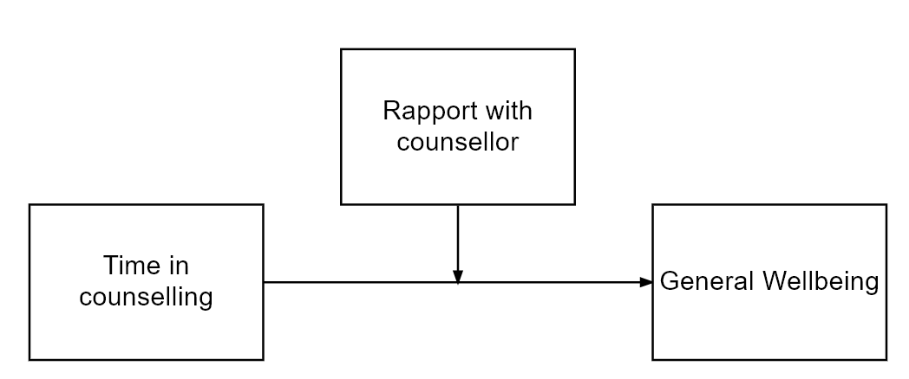
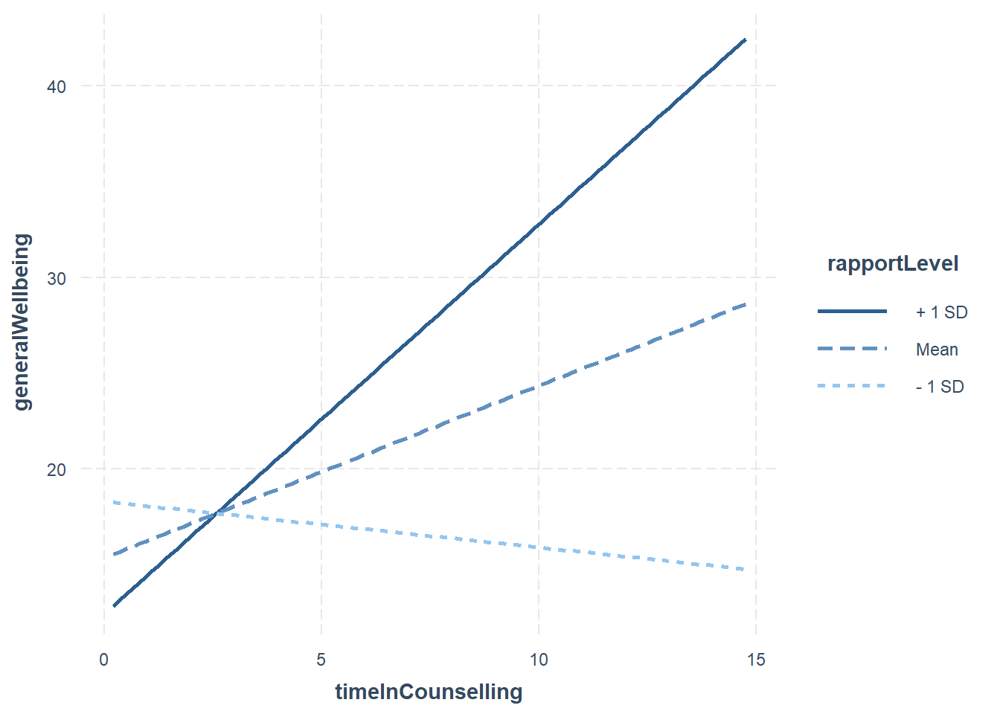
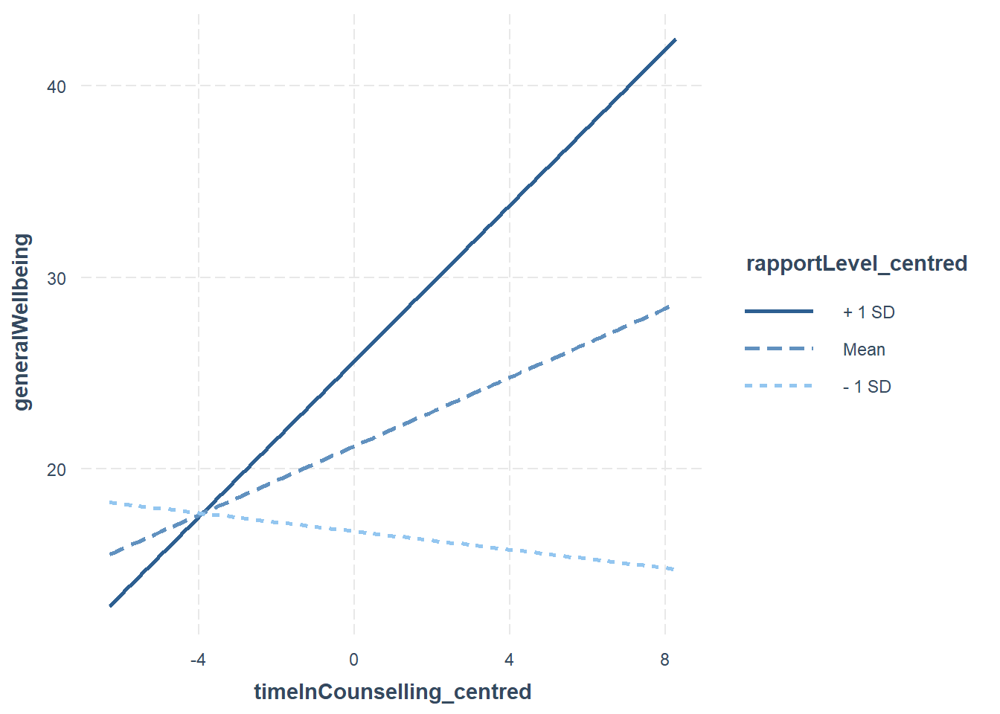
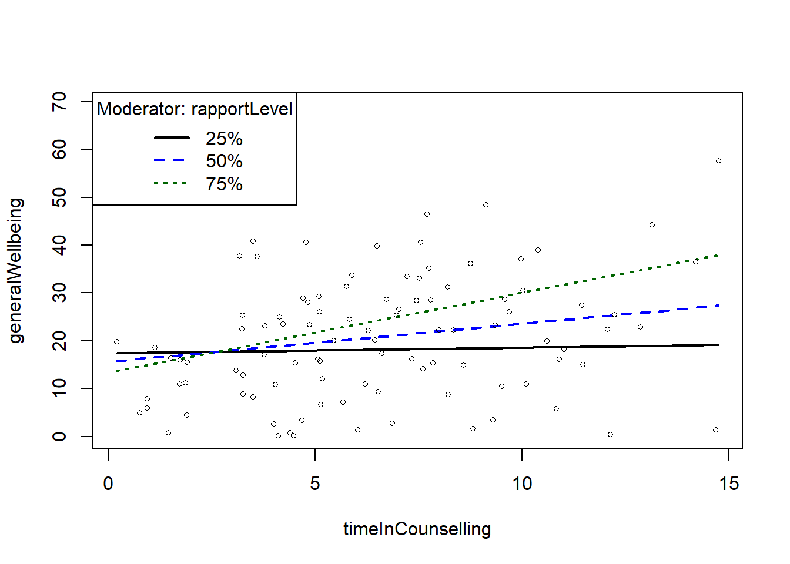
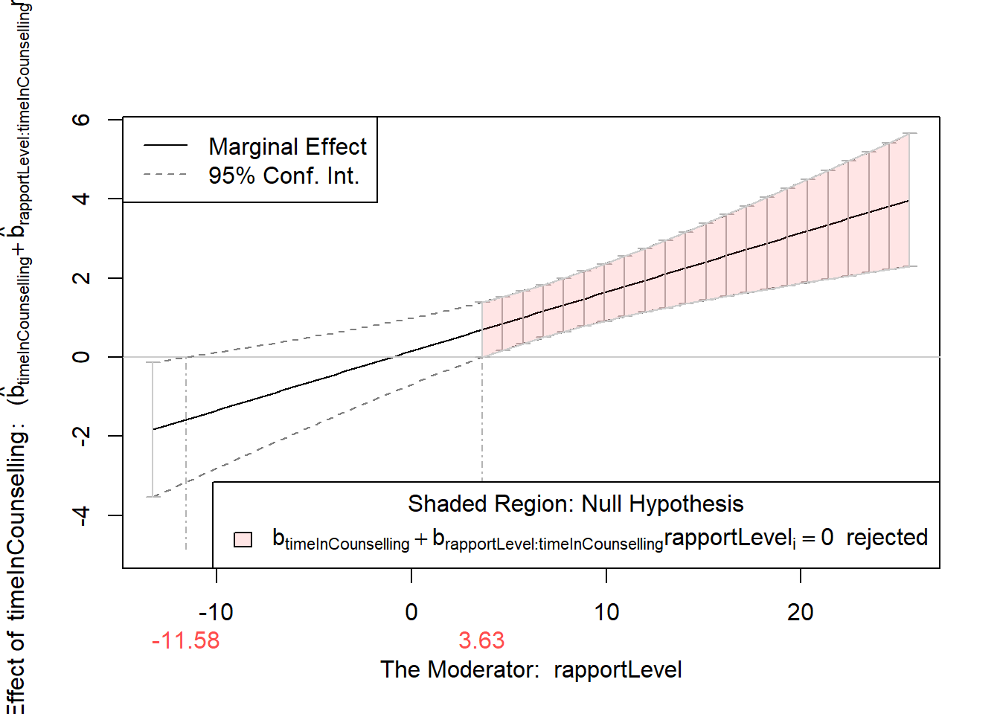
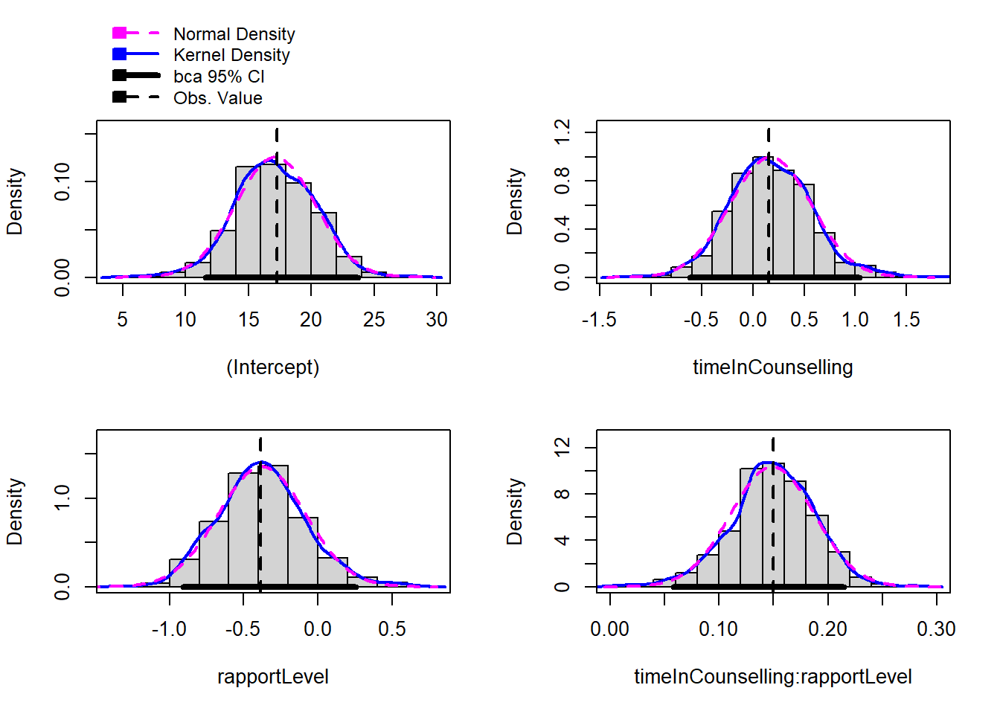

Moderation analysis
Additional moderation example:
Overview
- What is moderation?
- Moderation analysis in more detail
- Grand Mean Centering
- Checking Assumptions
- Interpreting Moderation
- Bootstrapping Moderation
What is moderation?
There is a direct relationship between X and Y but it is affected by a moderator (M)

In the above model, we theorise that Time in counselling predicts General Wellbeing but the strength of the relationship is affected by the level of Rapport with counsellor
What packages do we need?
- gvlma (for checking assumptions)
- interactions (for generating interaction plot)
- Rockchalk (for testing simple slopes)
- car (includes a Boot() function to bootstrap regression models )
What is moderation?
- The relationship between a predictor (X) and outcome (Y) is affected by another variable (M)
- This is referred to as an interaction (similar to interaction in standard regression)
- A moderator can effect the direction and/or strength of a relationship between X and Y
Here we might find that the relationship between Time in counselling and General Wellbeing is strong for those who have a strong rapport with their counselling psychologist and weak for those who do not have good rapport with their counselling psychologist.
Very similar to multiple regression
lm(Y ~ X + M + X*M)
Moderation analysis includes X, Z and the interaction between X and Z
If we find a moderation effect it becomes the focus of our analysis (the independent role of X and Z becomes less important)

In the plot above:
- The blue line is the “standard” regression line
- The black line is when the moderator is “low” (-1sd)
- The dotted line is when the moderator is “high” (+1sd)
Moderation: step-by-step
Step 1: Grand Mean Centering
- Regression coefficients (b values) are based on predicting Y when X = 0
- Not all measures actually have a zero value
- To make results easier to interpret, we can centre our data around the grand mean of the data (making the mean 0)
- The mean of the full sample is subtracted from the value
- This is similar to z-score (i.e. a standardised score)
To do this in R, we can use the scale() function:
timeInCounselling_centred <- scale(timeInCounselling, center=TRUE, scale=FALSE) #Centering X;
rapportLevel_centred <- scale(rapportLevel, center=TRUE, scale=FALSE) #Centering M;We then use the centred data in our analysis
We can see that the difference between the original data is the mean of the data.
timeInCounselling_centred <- scale(timeInCounselling, center=TRUE, scale=FALSE) #Centering X;
timeInCounselling
head(timeInCounselling_centred)
mean(timeInCounselling)
timeInCounselling[1]-timeInCounselling_centred[1] [1] 3.7580974 5.0792900 12.2348333 6.2820336 6.5171509 12.8602599
[7] 7.8436648 0.9397551 3.2525886 4.2173521 10.8963272 7.4392553
[13] 7.6030858 6.4427309 3.7766355 13.1476525 7.9914019 1.8664686
[19] 8.8054236 4.1088344 1.7287052 5.1281003 1.8959822 3.0844351
[25] 3.4998429 0.7467732 9.3511482 6.6134925 1.4474523 11.0152597
[31] 7.7058569 4.8197141 9.5805026 9.5125340 9.2863243 8.7545610
[37] 8.2156706 5.7523532 4.7761493 4.4781160 3.2211721 5.1683309
[43] 0.9384146 14.6758239 10.8318480 1.5075657 4.3884607 4.1333786
[49] 9.1198605 5.6665237 7.0132741 5.8858130 5.8285182 11.4744091
[55] 5.0969161 12.0658824 0.1950112 8.3384550 6.4954170 6.8637663
[61] 7.5185579 3.9907062 4.6671705 1.9256985 1.7128351 7.2141146
[67] 7.7928391 6.2120169 9.6890699 14.2003387 4.0358753 3.2366755
[73] 10.0229541 3.1631969 3.2479655 10.1022855 4.8609080 1.1171292
[79] 6.7252139 5.4444346 6.0230567 7.5411216 4.5173599 8.5775062
[85] 5.1180538 7.3271279 10.3873561 7.7407260 4.6962737 10.5952305
[91] 9.9740154 8.1935878 6.9549269 3.4883757 11.4426098 3.5989617
[97] 14.7493320 12.1304425 5.0571986 1.8943164
[,1]
[1,] -2.72442479
[2,] -1.40323216
[3,] 5.75231105
[4,] -0.20048864
[5,] 0.03462873
[6,] 6.37773774
[1] 6.482522
[1] 6.482522#Centering Data
Moddata$timeInCounselling_centred <- c(scale(timeInCounselling, center=TRUE, scale=FALSE))
#Centering IV;
Moddata$rapportLevel_centred <- c(scale(rapportLevel, center=TRUE, scale=FALSE)) #Centering moderator;
#Moderation "By Hand" with centred data
library(gvlma)
fitMod <- lm(generalWellbeing ~ timeInCounselling_centred *rapportLevel_centred , data = Moddata) #Model interacts IV & moderator
library(interactions)
ip <- interact_plot(fitMod, pred = timeInCounselling_centred, modx = rapportLevel_centred)
ip
Do I need to mean centre my data?
It is worth noting:
- It does not change the results of your interaction (coefficient, standard error or significance tests).
- It will change the results of the direct effects (the individual predictors in your model).
- It is a step that tries to ensure that the coefficients of the predictor and moderator are meaningful in relation to each other.
- In some cases, it might not be necessary to mean centre at all. However, there is no harm in doing so, and it could potentially be helpful.
Hayes (2013) discusses mean centering, pp. 282-290.
rapportLevel_centredClelland, G. H., Irwin, J. R., Disatnik, D., & Sivan, L. (2017). Multicollinearity is a red herring in the search for moderator variables: A guide to interpreting moderated multiple regression models and a critique of Iacobucci, Schneider, Popovich, and Bakamitsos (2016). Behavior research methods, 49(1), 394-402.
Step 2: Check assumptions
We can use the gvlma function to check regression assumptions
library(gvlma)
gvlma(fitMod)
Call:
lm(formula = generalWellbeing ~ timeInCounselling_centred * rapportLevel_centred,
data = Moddata)
Coefficients:
(Intercept)
21.1851
timeInCounselling_centred
0.8971
rapportLevel_centred
0.5842
timeInCounselling_centred:rapportLevel_centred
0.1495
ASSESSMENT OF THE LINEAR MODEL ASSUMPTIONS
USING THE GLOBAL TEST ON 4 DEGREES-OF-FREEDOM:
Level of Significance = 0.05
Call:
gvlma(x = fitMod)
Value p-value Decision
Global Stat 9.6949 0.04589 Assumptions NOT satisfied!
Skewness 7.7571 0.00535 Assumptions NOT satisfied!
Kurtosis 1.2182 0.26972 Assumptions acceptable.
Link Function 0.5287 0.46716 Assumptions acceptable.
Heteroscedasticity 0.1910 0.66207 Assumptions acceptable.The “global stat” is an attempt to check multiple assumptions of linear model: Pena, E. A., & Slate, E. H. (2006). Global validation of linear model assumptions. Journal of the American Statistical Association, 101(473), 341-354.
Since one of the underlying assumptions is violated, the overall stat is also not acceptable.
The data looks skewed, we should transform it or perhaps use bootstrapping
Step 3: Moderation Analysis
fitMod <- lm(generalWellbeing ~ timeInCounselling_centred *rapportLevel_centred , data = Moddata) #Model interacts IV & moderator
#Model interacts IV & moderator
summary(fitMod)
Call:
lm(formula = generalWellbeing ~ timeInCounselling_centred * rapportLevel_centred,
data = Moddata)
Residuals:
Min 1Q Median 3Q Max
-18.121 -8.938 -0.670 5.840 37.396
Coefficients:
Estimate Std. Error t value
(Intercept) 21.18508 1.14115 18.565
timeInCounselling_centred 0.89707 0.33927 2.644
rapportLevel_centred 0.58416 0.15117 3.864
timeInCounselling_centred:rapportLevel_centred 0.14948 0.04022 3.716
Pr(>|t|)
(Intercept) < 2e-16 ***
timeInCounselling_centred 0.009569 **
rapportLevel_centred 0.000203 ***
timeInCounselling_centred:rapportLevel_centred 0.000340 ***
---
Signif. codes: 0 '***' 0.001 '**' 0.01 '*' 0.05 '.' 0.1 ' ' 1
Residual standard error: 11.33 on 96 degrees of freedom
Multiple R-squared: 0.2737, Adjusted R-squared: 0.251
F-statistic: 12.06 on 3 and 96 DF, p-value: 9.12e-07The results above show that there is a moderated effect
Visualising the moderation effect
We use an approach called simple slopes to visualise the moderation effect
interact_plot(fitMod, pred = timeInCounselling_centred, modx = rapportLevel_centred)
The rockchalk package includes useful functions for visualising simple slopes
library(rockchalk)
fitMod <- lm(generalWellbeing ~ timeInCounselling *rapportLevel , data = Moddata)
summary(fitMod)
slopes <- plotSlopes(fitMod, modx = "rapportLevel", plotx = "timeInCounselling")
testSlopes <- testSlopes(slopes)
plot(testSlopes)
Call:
lm(formula = generalWellbeing ~ timeInCounselling * rapportLevel,
data = Moddata)
Residuals:
Min 1Q Median 3Q Max
-18.121 -8.938 -0.670 5.840 37.396
Coefficients:
Estimate Std. Error t value Pr(>|t|)
(Intercept) 17.28006 3.17944 5.435 4.15e-07 ***
timeInCounselling 0.15510 0.42033 0.369 0.71296
rapportLevel -0.38484 0.29916 -1.286 0.20140
timeInCounselling:rapportLevel 0.14948 0.04022 3.716 0.00034 ***
---
Signif. codes: 0 '***' 0.001 '**' 0.01 '*' 0.05 '.' 0.1 ' ' 1
Residual standard error: 11.33 on 96 degrees of freedom
Multiple R-squared: 0.2737, Adjusted R-squared: 0.251
F-statistic: 12.06 on 3 and 96 DF, p-value: 9.12e-07
Values of rapportLevel OUTSIDE this interval:
lo hi
-11.580166 3.634439
cause the slope of (b1 + b2*rapportLevel)timeInCounselling to be statistically significantStep 4: Bootstrapping
The car package includes a function to bootstrap regression
library(car)Loading required package: carDataWarning: package 'carData' was built under R version 4.2.3bootstrapModel <- Boot(fitMod, R=999)
confint(fitMod)
confint(bootstrapModel)
summary(bootstrapModel)
hist(bootstrapModel)
2.5 % 97.5 %
(Intercept) 10.96891826 23.5912086
timeInCounselling -0.67926290 0.9894532
rapportLevel -0.97866229 0.2089882
timeInCounselling:rapportLevel 0.06963667 0.2293205
Bootstrap bca confidence intervals
2.5 % 97.5 %
(Intercept) 11.57230420 23.7222700
timeInCounselling -0.61780918 1.0397199
rapportLevel -0.90786799 0.2558502
timeInCounselling:rapportLevel 0.05806412 0.2146814
Number of bootstrap replications R = 999
original bootBias bootSE bootMed
(Intercept) 17.28006 -0.13667103 3.165301 17.05431
timeInCounselling 0.15510 0.01637117 0.399550 0.15929
rapportLevel -0.38484 0.00716631 0.294061 -0.38218
timeInCounselling:rapportLevel 0.14948 -0.00052838 0.038516 0.14974